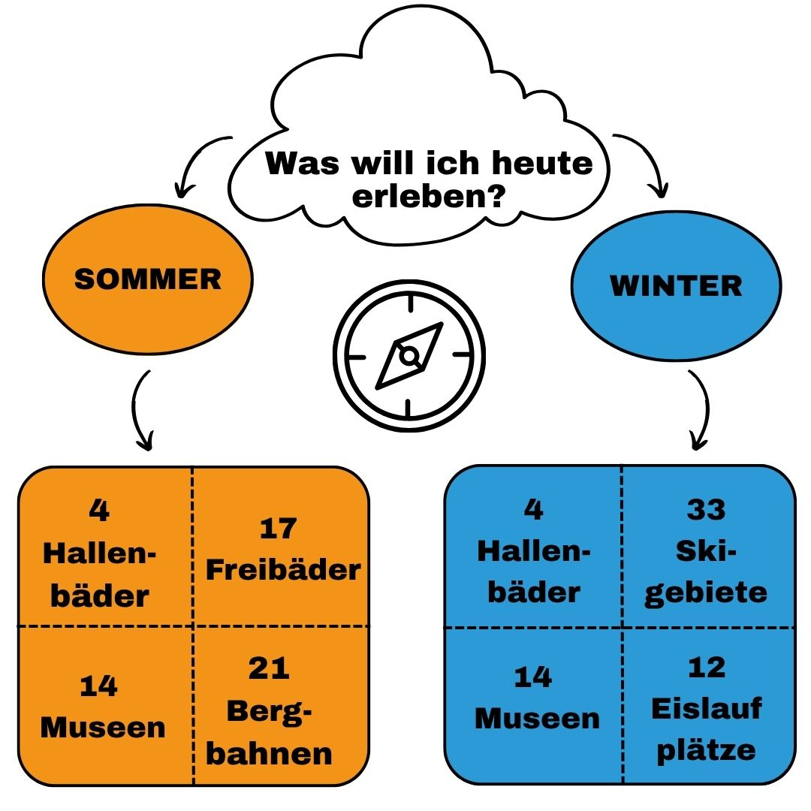

Der Freizeit Kompass
Deine Saison - Dein Ticket - Dein Plan
Entdecke mit deinem Freizeitticket die Highlights der Sommer- und Wintersaison in Tirol! Ob verschneite Gipfel mit den schönsten Skigebieten, sonnige Freibäder oder Badeseen in deiner Nähe, die nächsten Bergbahnen oder interessante Museen. Dein Freizeitkompass zeigt dir den Weg zum nächsten Abenteuer.
twoseasontyrol ist deine interaktive Plattform zur optimalen Freizeitplanung. Hier findest du alles auf einen Blick, was mit deinem Freizeitticket möglich ist. Und das saisonal aufgeteilt in Sommer und Winter.
Wie komme ich an mein Ziel?
Alle Infos auf einen Blick
Auf den nächsten Seiten findest du:
Übersichtliche Karten für Sommer und Winter
Freizeitangebote nach Kategorien wie Skigebiete, Museen, Schwimmbäder/Badeseen und Seilbahnen
Infos zu Öffnungszeiten und Anreise mit Bus und Bahn für eine entspannte und umweltfreundliche Planung
Wetterdaten in Echtzeit inklusive Temperatur, Wind und Lawinensituation